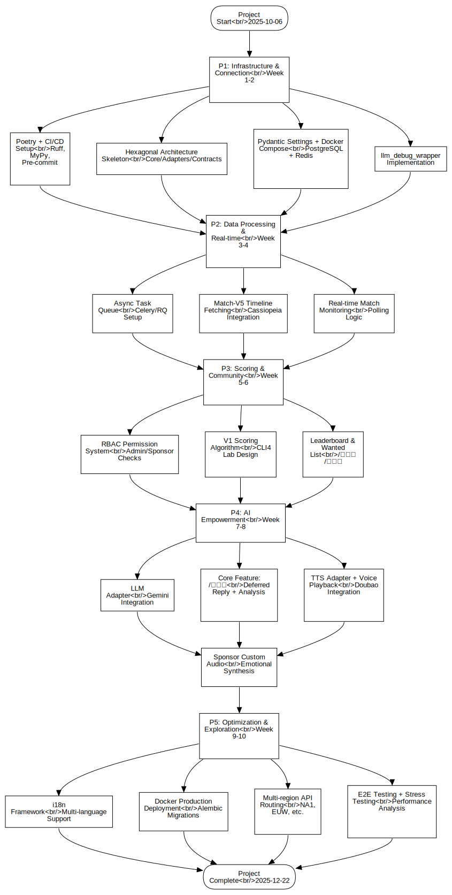

Flowchart by Mermaid
FCFlowchart
Untitled
::
Flowchart by Mermaid
Description
none
Diagrams

Flowchart Diagram by Mermaid
Properties
Name
Value
name
Flowchart by Mermaid
Owned Elements
Flowchart Diagram by Mermaid
Project Start<br/>2025-10-06
P1: Infrastructure & Connection<br/>Week 1-2
Poetry + CI/CD Setup<br/>Ruff, MyPy, Pre-commit
Hexagonal Architecture Skeleton<br/>Core/Adapters/Contracts
Pydantic Settings + Docker Compose<br/>PostgreSQL + Redis
llm_debug_wrapper Implementation
P2: Data Processing & Real-time<br/>Week 3-4
Async Task Queue<br/>Celery/RQ Setup
Match-V5 Timeline Fetching<br/>Cassiopeia Integration
Real-time Match Monitoring<br/>Polling Logic
P3: Scoring & Community<br/>Week 5-6
RBAC Permission System<br/>Admin/Sponsor Checks
V1 Scoring Algorithm<br/>CLI4 Lab Design
Leaderboard & Wanted List<br/>/排行榜 /通缉榜
P4: AI Empowerment<br/>Week 7-8
LLM Adapter<br/>Gemini Integration
Core Feature: /讲道理<br/>Deferred Reply + Analysis
TTS Adapter + Voice Playback<br/>Doubao Integration
Sponsor Custom Audio<br/>Emotional Synthesis
P5: Optimization & Exploration<br/>Week 9-10
i18n Framework<br/>Multi-language Support
Docker Production Deployment<br/>Alembic Migrations
Multi-region API Routing<br/>NA1, EUW, etc.
E2E Testing + Stress Testing<br/>Performance Analysis
Project Complete<br/>2025-12-22